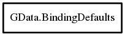

GData.BindingDefaults – g_data_binding_lib Reference Manual
Packages
g_data_binding_lib
GData
BindingDefaults
get_instance
get_introspection_object_for
get_transfer_information_type_for
get_transfer_object_for
register
BindingDefaults
Object Hierarchy:

Description:
public
class
BindingDefaults
Enables classes to specify its own way of property resolving and signaling
Since:
0.1
Namespace:
GData
Package:
g_data_binding_lib
Content:
Static methods:
public
static
BindingDefaults
get_instance
()
Returns singleton instance of BindingDefaults
Methods:
public
void
register
(
Type
class_type,
CreateDataTransferFunc
creation_method,
CreateIntrospectionDataTransferFunc
? introspection_method,
Type
original_type =
INVALID
)
Registration of custom data transfer method that can be used to define classes with special properties or classes that are not derived from GObject
public
BindingDataTransfer
?
get_transfer_object_for
(
Object
? obj,
string
property_name,
bool
use_original_type)
Resolves data transfer and signal control object for specified objects type or its original_type if use_original_type is specified
public
BindingDataTransferInterface
?
get_introspection_object_for
(
Type
? class_type,
string
property_name,
bool
use_original_type)
Resolves data transfer and signal control object for specified objects type or its original_type if use_original_type is specified
public
InformationAvailability
get_transfer_information_type_for
(
Type
class_type,
bool
use_original_type)